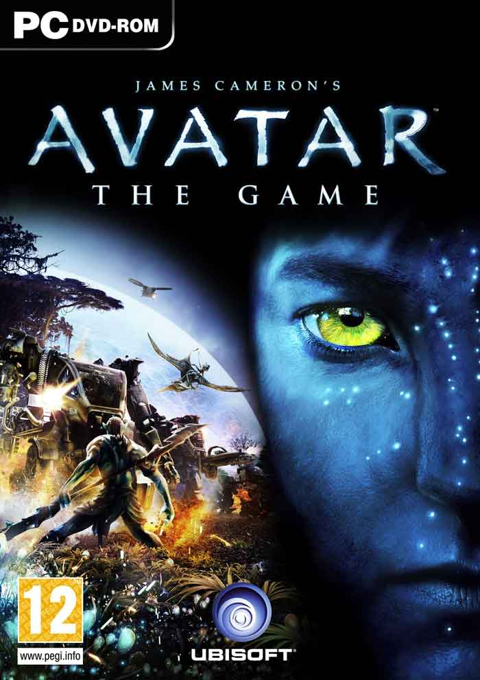

Movie Games
Categories > Movies
- Avatar

Avatar: The Game takes place on the same moon as its movie counterpart but rather than retelling Cameron's tale, it offers a prequel story and an introduction to Pandora's past. The reason for all of the commotion? Pandora is the only known place to harvest unobtanium, a mineral worth whatever it takes to get it. Unfortunately, Pandora has a toxic atmosphere and is the home to some hostile locals, including giant carnivorous plants and the Na'vi, an alien race that stands roughly 10 feet tall. The RDA, a military for hire, has countered with Avatars, a...